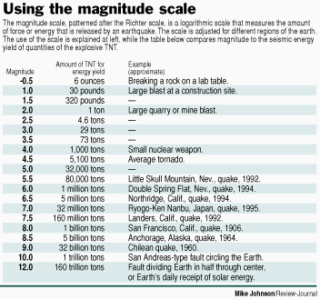
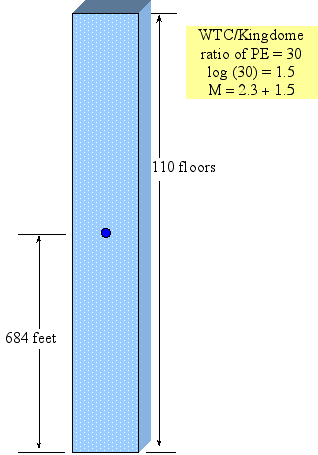
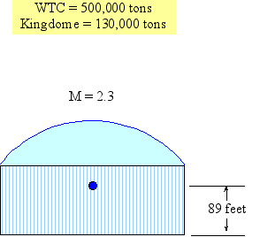
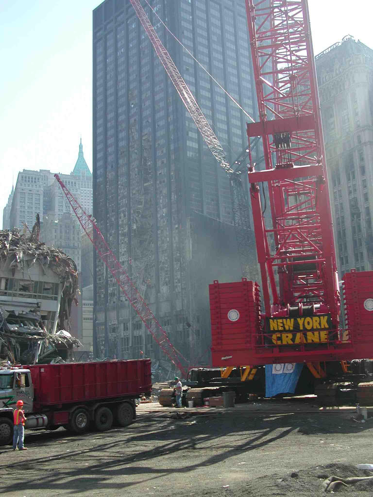

| Bottom | homepage | Why Indeed | Billiard Balls |
|
|
The Star Wars Beam Weapons
and
Star Wars Directed-Energy Weapons (DEW)
(A focus of the Star Wars Program)
by
Dr. Judy Wood and Dr. Morgan Reynolds
(originally posted: October 17, 2006)
Page 2: Seismic Signal Strength
|
At the time this article was being developed, many people expressed disbelief that energy weapons existed outside of science fiction until they were reminded of the Star Wars Program, also known as the Strategic Defense Initiative (SDI)*. The name of this article was chosen as a reminder that energy weapons do exist and have been developed over 100 years. Most of this technology is classified information. It can also be assumed that such technology exists in multiple countries. The purpose of this article was to begin to identify the evidence of what happened on 9/11/01 that must be accounted for. In doing so, the evidence ruled out a Kinetic Energy Device (bombs, missiles, etc.) as the method of destruction as well as a gravity-driven "collapse."
*SDI was created by U.S. President Ronald Reagan on March 23, 1983.1 It is thought that SDI may have been first dubbed "Star Wars" by opponent Dr. Carol Rosin, a consultant and former spokeswoman for Wernher von Braun. However, Missile Defense Agency (MDA) historians attribute the term to a Washington Post article published March 24, 1983, the day after the Star Wars speech, which quoted Democratic Senator Ted Kennedy describing the proposal as "reckless Star Wars schemes."2 Before it was named the "Star Wars Program (SDI) in 1983, it was the Advanced Space Programs Development.3
12/12/10 -- Dr. Judy Wood
|
| 1Strategic Defense Initiative, Wikipedia, 2Sharon Watkins Lang. SMDC/ASTRAT Historical Office. "Where Do We Get Star Wars?", The Eagle. March 2007. 3 Robert M. Bowman, former Director of Advanced Space Programs Development for the U.S. Air Force in the Ford and Carter administrations. |
This page last updated, November 8, 2006
|
Shortcuts: Jump to: WTC Jump to: KINGDOME: Jump to: Extrapolation Jump to: Comparison of Potential Energy Jump to: Bankers Trust |
Audio:
29 November 2006, Judy Wood narrates these pages web pages on |
V. WTC and Kingdome Top
Careful data on the Kingdome demolition on March 26, 2000 are available. They allow us to estimate what the earthquake-equivalent impact of the Twin Tower destruction should have been. The Kingdome data are pre-9/11 and unlikely to be politically corrupted.
Bedrock conditions are important in affecting earthquake-equivalent (Richter) readings. If a structure is anchored directly to bedrock, its demolition will yield a higher Richter than if it were not anchored in bedrock. Why? Because if not anchored to bedrock, the energy released by demolition is dissipated via the earth "cushioning" materials. If anchored to bedrock, the released energy directly impacts bedrock, "pinging" the earth directly without any dampening, allowing the signal to carry better to recording stations. It would be like hitting your mattress with a hammer versus hitting a tuning fork. Which one carries a stronger signal to its base?
The Kingdome was not anchored in bedrock. If the Kingdome Richter value was a 2.3 reading transferred through soft material, a building with 30x the potential energy anchored directly in bedrock should have transferred a much higher signal to earthquake monitoring instruments. Amazingly, the south tower reading of 2.1 was lower than the Kingdome’s 2.3 despite the tower having 30x the potential energy and being anchored in bedrock. The difference in these Richter readings imply the Tower had only 60% of the potential energy of the Kingdome instead of the real range of 3,000%, an absurd implication. And the fact that the Towers were anchored in bedrock means that the energy release should have rung through to recording instruments loud and clear.
| WTC | Kingdome | |
| steel (tons) | 100,000 | - |
| concrete (yd3) | - | - |
| windows | - | - |
| electric cables (miles) | 6,000 | - |
| heating ducts (miles) | 198 | |
| floors | 110 | - |
| base dimensions (feet) | 208 by 208 | - |
| base (ft2) | ||
| Weight (tons) | 500,000 | 130,000 |
| elevators | 103 | |
| Height (ft) | 1362, 1368 | 250 |
|
Source
|
(See Appendix A for data and data sources.)
_______________________________________
|
Opening - Termination dates (WTC1: Dec. 1970-Sept.2001) World Trade Center Statistics:
|
| Source |
Note: 425,000 yd3 x 33 (ft3/yd3)x (110)lb/ft3 x (ton/2,000 lbs)= 631,125 tons
Assuming this value is for both towers, one tower would be 316,000 tons.
(March 27, 1976 - March 26, 2000)
(See Appendix A for data and data sources.)
__________________________________________________
| Height of Dome: 250 ft. to apex; Height of Cylinder: 133 ft., 6 in. to top ring Diameter of dome: 660 ft., inner diameter |
| Source |
__________________________________________________
| DIMENSIONS: Site: 23.9 acres (includes building and one parking lot). Building area: 9.34 acres. Roof area: 7.85 acres. Height: 250 feet. Diameter: 660 feet (inside wall); 720 feet (encompassing outside ramps). Volume: 67 million cubic feet within outside columns. Exhibit space: 190,400 square feet (Arena & 100 level concourse).. Structural steel: 443 tons. Concrete: 52,800 cubic yards. |
| Source |
__________________________________________________
| Building area: 9.34 acres Roof area: 7.85 acres Height: 250 feet Diameter: 660 feet (inside wall) 720 feet (exterior walls) Volume: 67 million cubic feet Exhibit space: 190,400 square feet Weight: 130,000 tons Structural steel: 443 tons Concrete: 52,800 cubic yards |
| Source |
Check:
Note: 52,800 yd3 x 33 (ft3/yd3)x (152)lb/ft3 x (ton/2,000 lbs)= 108,346 tons
108,346 tons + 443 tons = 109,000 tons
__________________________________________________
| From the Seattle Times Dust choked downtown for nearly 20 minutes, blocking out the sun and leaving a layer of film on cars, streets and storefronts. The dust cloud reached nearly as high as the top of the Bank of America Tower and drifted northwest about 8 miles an hour. |
| Source |
If the WTC had 425,000 cubic yards of lightweight concrete (72% the weight of normal concrete), then there were 631,000 (?) tons of concrete in the complex. This is a crude cross-check on the weight of the towers and the WTC and suggests that 500,000 tons is not an exaggeration.
|
Note: 425,000 yd3 x 33 (ft3/yd3)x (110)lb/ft3 x (ton/2,000 lbs)= 631,125 tons |
If the Kingdome had 52,800 cubic yards of normal concrete, then there were 109,000 tons of concrete in the dome. Therefore, the 130,000 ton estimate of the Kingdome’s weight seems reasonable.
|
Note: 52,800 yd3 x 33 (ft3/yd3)x (152)lb/ft3 x (ton/2,000 lbs)= 108,346 tons |
The following account of the Kingdome demolition contrasts sharply with the destruction of the Twin Towers, as shown below:
1. "Dust choked downtown [Seattle] for nearly 20 minutes" yet ultra-fine dust plagued lower Manhattan weeks and months.
2. Dust "drifted northwest about 8 miles an hour," the pace of stragglers at the end of a 26-mile marathon, yet people running full speed could not outrun the pyroclastic-like dust from the Twin Tower destruction [see Figure 86 on page 6].
3. "Carefully placed explosives—4,461 pounds in all—collapsed" the Kingdome which would imply 17,158 pounds to just bring down a tower over a quarter-mile-high but would not pulverize it nor guarantee falling within its own footprint. If we adjust for the tower’s height of center of mass, potential energy…67 tons of explosives would be required in this amount imply a 3.5 Richter reading [insert chart], far above the 2.3 reported for WTC 1 and equivalent to 67 tons of required explosives. Yet this would not pulverize and would leave an enormous rubble pile to jackhammer into smaller pieces, not in evidence.
 |
| Figure xx. Adopted from this Chart Source: |
4. Jackhammers?

|

|
| Figure 21(a). Source: |
Figure 21(b). Source: |

|

|
| Figure 21(c). Source: |
Figure 21(d). Source: |
| Figure 21 (repeat from page 1). Kingdome video (courtesy of Portland Indymedia): (mpg) Source | |
- Extrapolation Top
"Dust choked downtown for nearly 20 minutes" (not days?)
The dust drifted northwest about 8 miles an hour. (8 mph is about an 8-minute mile, the speed a straggler might be running on the last leg of a 26-mile marathon. In NYC on 9/11, no one could out-run the rapidly expanding dust cloud. [reference]
The rubble height was 30 out of the original 250 feet height. 30ft/250ft = 12%
110 x 12% = 13.2 stories for the WTC
4,461 lbs x (500,000/130,000) = 17,158 lbs = (40 people) x (10 lbs each trip) x (43 trips).
But it's not pulverized, nor is it controlled into its own footprint. Explosives only get the chunks down on the ground where they can be broken up and hauled away,.
21 miles of detonating cord x (1368/250) = 115 miles of detonating cord, extrapolating from relative height
" with hydraulic jackhammers breaking columns into chunks" =>> not pulverized!
"...chunks of concrete flew onto rooftops?"
See appendix XX where only aluminum cladding landed on neighboring rooftops.
__________________________________________________
- Comparison of Potential Energy Top
If each tower was made of 100,000 tons of steel and had a total weight of 500,000 tons, then the steel is only 20% of the mass. So, if they pulverize all but the steel in the lower 36 floors, then the lower 36 floors are fairly light. I went through those numbers and found it is 36 floors of only steel that is equivalent to the Kingdome's PE. I.e. The bottom 36 floors of a 110 floor-building (where the entire 110 floors weighs 100,000-tons) has the same PE as the Kingdome.
The Kingdome does not have its weight evenly distributed. There is more density lower down, so one would expect the center of gravity to be lower than the geometric center. This would produce a lower potential energy (PE) than what I used. But, also, the WTC was heavier on the lower floors than the upper floors, which would also produce a slightly lower center of gravity as well as a slightly lower PE. So, the ratio of the WTC's-PE to the Kingdome's-PE is a reasonable approximation.
We know that each WTC tower did not slam to the earth and register as a 3.8 Magnitude earthquake. We also know that a lot of the building came down as dust.
So, if we assume every floor contains 1/110th of the building's total mass, the bottom 20 floors of WTC1, alone, have the same potential energy as the Kingdome. But, when the event was all over, we didn't see the lower floors stacked up like pancakes that had slammed to the ground. What happened to all the concrete and marble? What happened to all the glass? What happened to all the desks? But, what we did see was a bunch of steel beams. So, if we were only left with steel beams, how many floors worth of steel would have the same PE as the Kingdome?
The weight of all the structural steel in the building is 100,000-tons [REFERENCE needed], which is 20% of the weight of the entire building. If we assume every floor contains 1/110th of the building's total mass of structural steel, just the steel in the bottom 36 floors of WTC2 has the same PE as the Kingdome.
So, as an approximation, the structural steel of WTC2 makes up 36/110th of 1/5th the total mass of the building, or 6.5% of the building's mass. If this mass is evenly distributed over 36 floors, it will have the same proportional potential energy relative to the Kingdome that could be expected to cause the equivalent of a 2.1 earthquake when it slammed to the ground. Is this reasonable, considering the debris remaining after the event?
30X … log of 30 yields 1.5, which must be added to 2.3 Richter for Kingdome to yield 3.8 Richter.
 |
 |
|
Figure 23(a). WTC
|
Figure 23(b). Kingdome
|
| Figure 23. WTC and the Kingdome with approximate Potential Energy (PE). | |
Log of 1 is zero…for WTC1 lower 20 stories,…yields same earthquake.
|
Figure 24(a). normal WTC1 floors
|
Figure 24(b). Kingdome
|
| Figure 24. Twenty floors in WTC1 footprint with PE equal to the Kingdome. (2/11th of the height and 2/11th of the mass of WTC1 would have the same PE as the Kingdome.) | |
Log of 0.63 is -0.2…for WTC2 lower 16 stories,…yields 2.1 earthquake.
|
Figure 25(a). normal WTC2 floors
|
Figure 25(b). Kingdome
|
|
Figure 25. Sixteen floors in WTC2 footprint with PE equal to the Kingdome. (14.5%of the height and 14.5% of the mass of WTC2 would have the same PE as the Kingdome.)
|
|
Transition from total pulverization to gravity fall of large solids.
|
Figure 26(a) normal WTC2 floors
|
Figure 26(b) only the structural steel from these floors
|
|
Figure 26(a). If 15% of the mass, evenly distributed over the lower 20 floors, (15% of the building's height). or (b) 6.5% of the mass of the entire building's mass is evenly distributed over the lower 36 floors of WTC2 (32% of the building's height), it would have the same PE as the Kingdome.
|
|
- Bankers Trust Top
|
 |

|
| Figure 27. Note that solid debris appears to have hit only the lower half of this 40-story building (Bankers Trust). However, the top few floors appear to have had their windows blown out. Source |
Figure 28. The tower is being peeled downward. Dark explosions shoot up, while white ones explode outward. Above the white explosions the building has vanished while the lower part awaits termination. Source |
+
Continue to next page.
| Top | homepage | Why Indeed | Billiard Balls |
|
|
|